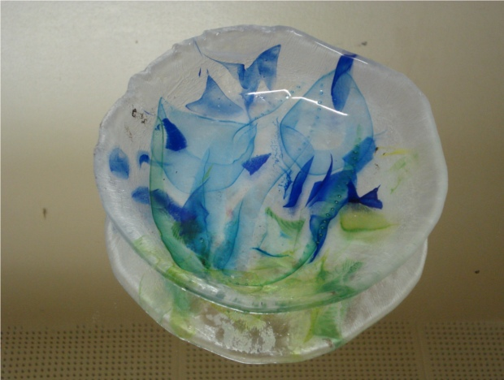
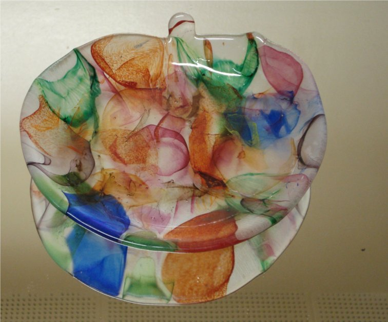
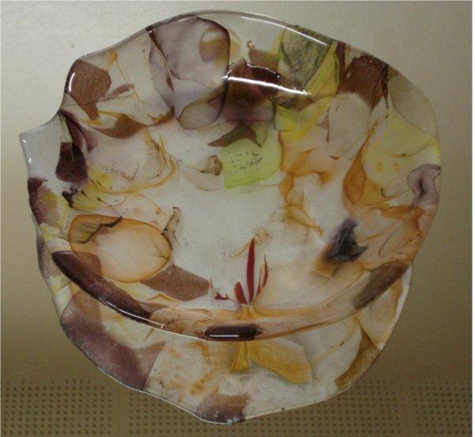

Kevät Spring
Kesä Summer
Syksy Autumn

Talvi Winter
Kierrätettyä lasia |
Recycled glass |
| Nämä työt on tehty uunisulatuksena lasinpuhaltajan hylkylasista. Värit voin valita, kuviot syntyvär lasin luonteesta | These works are kiln made of recycled glassblower's pint. The colors I can choose, patterns come out as they like. |
|
 Kevät Spring |
 Kesä Summer |
|
 Syksy Autumn |
Talvi Winter |
Vuodenajat Four seasons |
|